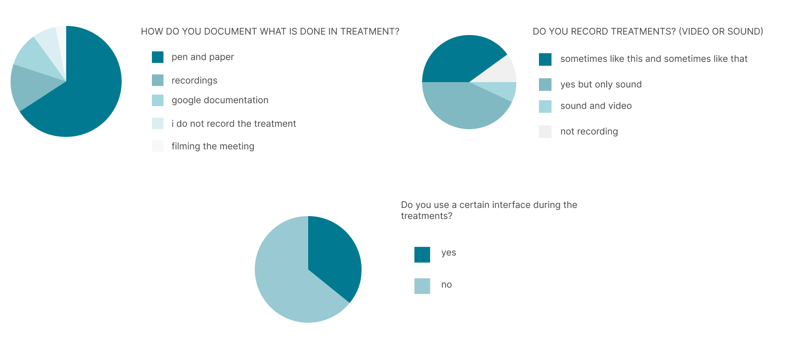
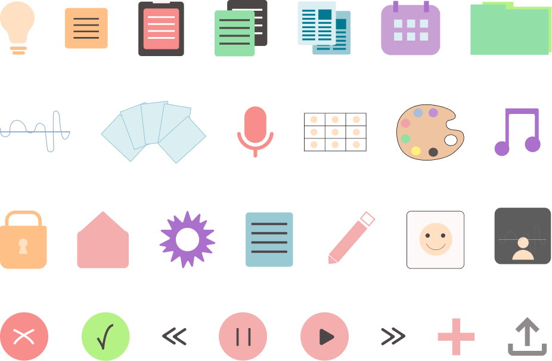
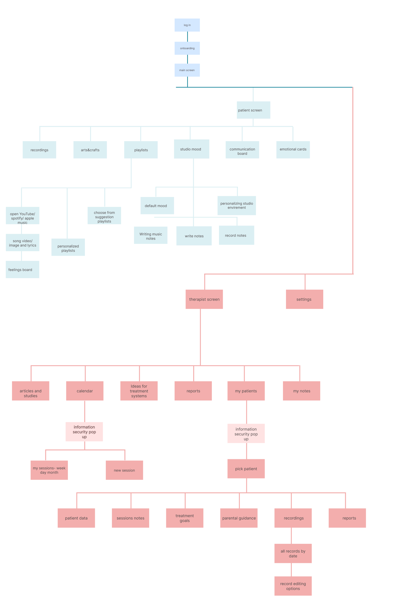
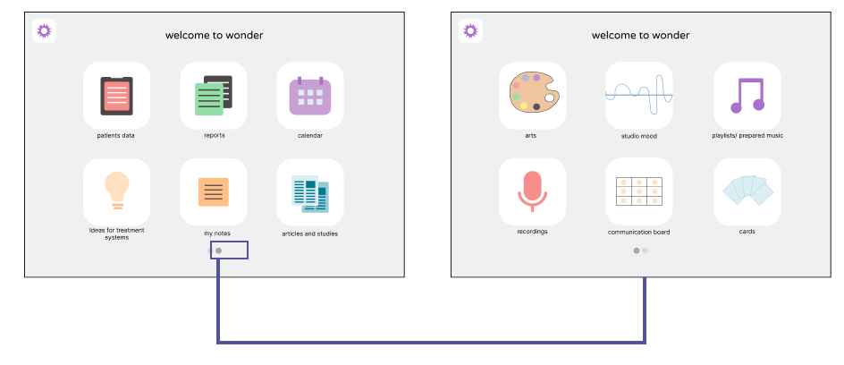
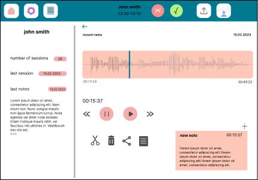
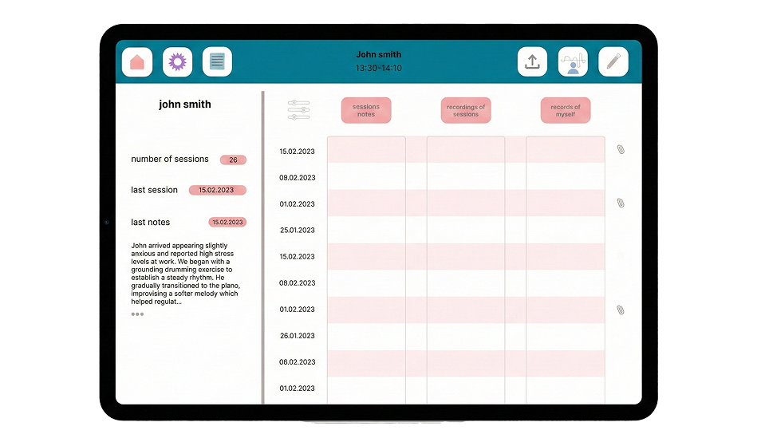
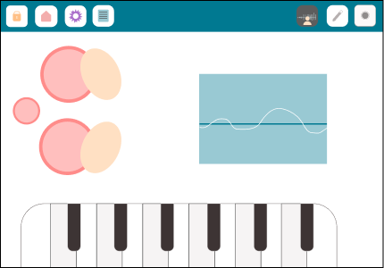

Wonder: Therapy Management System
How do we bridge the gap between clinical structure and emotional expression?

About The Project
Wonder is a dual-sided platform connecting therapists and patients. I led the entire product lifecycle independently — from conducting user interviews and usability testing to crafting the final UI — creating a bridge between management needs and emotional creativity.
The Problem
When I started working on the app I wanted to know what emotional therapy actually means. I read a little on the internet but I felt it was not enough to understand the needs and desires of the caregivers.
With the help of networking and help from relatives and friends, I reached ten therapists who agreed to be interviewed and help me. Each of them told me about his work with different populations and their needs, how treatment works for him and what his needs are.
Research
Quotes from the interviews

Conclusions From The Study
All therapists raised the issue of recording sessions and documenting them. We pointed out that there is currently no interface that meets their needs in the best way, and with the help of another sample study among 30 therapists, about half of them answered that they use a page and a pen to document the meetings.
For the recording of the meetings, the best solution at the moment is recording on the personal phone and transferring it to the computer or saving it on the phone, which is burdensome and problematic for the privacy of the patient therapist.
Most of the therapists stated that they understand the technology but at a fairly basic level, therefore the application had to be accessible to both therapists and patients, and have an easy and fast learning curve. They also noted that while musical options during treatment would be great, they would not provide treatment only on a tablet — there is no substitute for a real musical instrument in their eyes.
Personas

Yotam Chen
8 years old, on the autistic spectrum. Has difficulty making eye contact and interpersonal communication. It was suggested to his parents to turn to music therapy to help him open up and express himself in new ways. When a tablet user tends to press all the buttons and concentrate less on the displayed content, he is prone to visual irritation. When listening to music, his attention goes up and he occasionally manages to make eye contact.

Shani Michael
35 years old, works as an emotional therapist for several years. Has a master's degree. Works at several jobs, one of them a school with limited means and room for a wide variety of tools. Less connected to technology and therefore looking for a simple solution for treatments. She records notes between sessions on her phone and summarizes them on paper. Finding information means going through a large number of recordings or notebook pages.
Information Architecture
The app splits into two clear worlds after login: a patient screen built around creative, emotional tools (recordings, arts & crafts, playlists, studio mood, a communication board, emotional cards), and a therapist screen built around clinical structure (articles & studies, calendar, treatment ideas, reports, patients, notes).
Feature Icons


Main Features
For therapists: patients data, reports, calendar, ideas for treatment systems, my notes, articles and studies.
For patients: arts, studio mood, playlists / prepared music, recordings, a communication board, and cards.

UI Design
The patient-facing "studio mood" tool pairs a calming waveform visualizer with a playable piano strip, letting patients express themselves creatively during a session rather than only through clinical notes.



Usability Testing
After a meeting with five therapists I came away with some conclusions. All therapists stated that the interface is simple and accessible.
All the therapists first turned to the patient area and then to the other features in the application, and noted that this is the main part for them — they focused less on the studio area.
In one of the tests, a therapist stated that she would not use the app to deliver a complete treatment, but would use its documentation and recording capabilities as a complementary accessory — in her opinion, the app cannot replace treatment with real musical instruments.
One therapist suggested adding an area for articles and studies, creating a collaborative community to connect therapists and enrich their knowledge. As a result, the main page of the application is divided into two: a patient area and a therapist area, so sensitive information is never revealed to patients using the app.
More Projects